Видеоредактор Flowblade
Быстрый, точный, стабильный
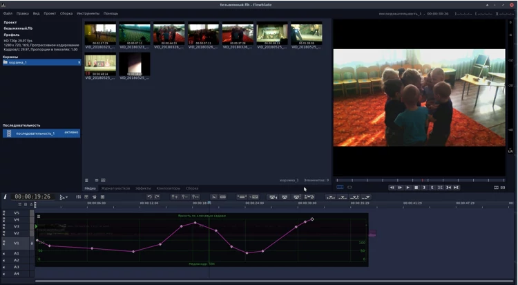Flowblade — многодорожечный нелинейный видеоредактор, выпущенный под лицензией GPL3. Поможет, как новичку, так и опытному пользователю воплотить в жизнь свои творческие идеи, по созданию видеороликов.
Поддерживает все кодеки
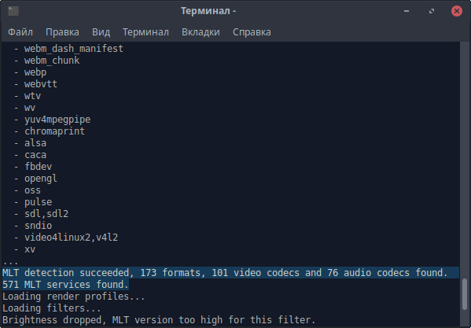Flowblade поддерживает все кодеки, которые в целом могут быть доступны в системе Linux, так как, он работает в качестве интерфейса для библиотеки FFMPEG. При запуске в терминале, мы видим сообщение о том, что для работы, нам доступны: 173 форматов, 101 видеокодеков и 76 звуковых кодеков.
Настраиваемый «Режим работы»
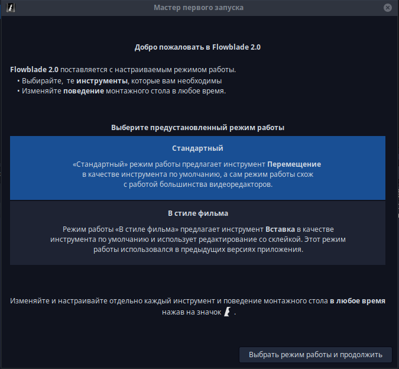Можно выбрать предустановленный «Режим работы» (набор инструментов, его порядок, инструмент по умолчанию и определённое поведение монтажного стола), или настроить его самому.
Композиторы и эффекты
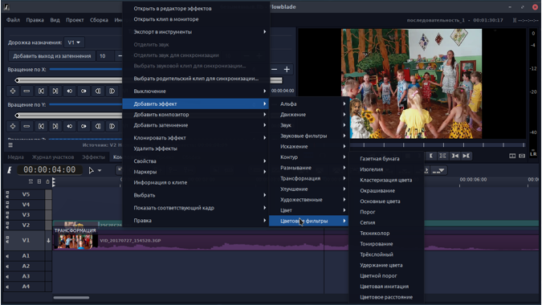Объединяйте и смешивайте видео, изображения и звук с помощью мощных инструментов. Тонируйте видеоролики в соответствии с вашим видением и изменяйте звук, для получения того настроения, которое вы хотите передать.
Инструмент Эффекты G'MIC
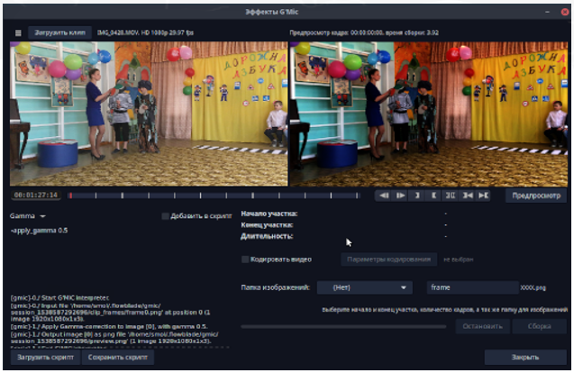G'MIC — это мощная технология фильтрации изображений с открытым исходным кодом, которую Flowblade предоставляет в виде отдельного инструмента. Смотрите демонстрационный ролик.
Синхронизация
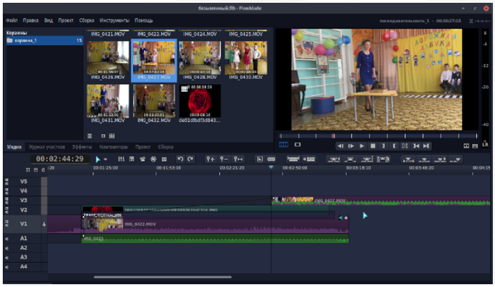Синхронизируйте ваши видеоклипы со звуковыми клипами или с клипами на других дорожках. Если синхронизация нарушена, можно легко синхронизировать их повторно.
Режим прокси
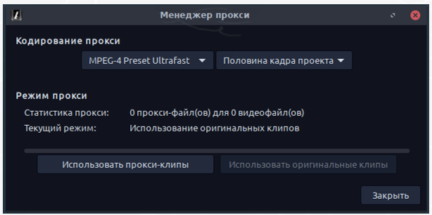Если у вас слабый компьютер, слишком медленный внешний накопитель или видеоролики хранятся на сетевом сервере, для комфортного редактирования, вы всегда можете выбрать Режим прокси.
Видеообзоры
Цитаты пользователей
"Когда я наткнулся на Flowblade, он сразу мне понравился. Я редактирую в нём фильмы продолжительностью от 2 до 3 часов используя большое количество видеоклипов. Очень удобно, когда клипы автоматически склеиваются друг с другом, особенно во время удаления плохих участков и перемещения видео.", dnsXXXXX
"Мы - группа немецких студентов — в настоящее время снимаем фильм для школьного проекта, мы попробовали несколько свободных видеоредакторов и решили остановиться на Flowblade.", "...с этого момента всё стало получаться хорошо — наконец сбои исщезли! Многое эффектов, про которые я думал, что придётся забыть, теперь снова мне доступны. Спасибо за ваш проект — Flowblade rocks!", R.W, Germany
"Я профессиональный оператор монтажа и режиссер, со стажем работы более 15 лет здесь, в Италии... Flowblade уже показывает, что в нём заложен большой потенциал, так как видно, что разрабатывают его люди имеющие представление, каким должен быть видеоредактор, для реального его использования.", M.S, Italy
Быстрый, точный, стабильный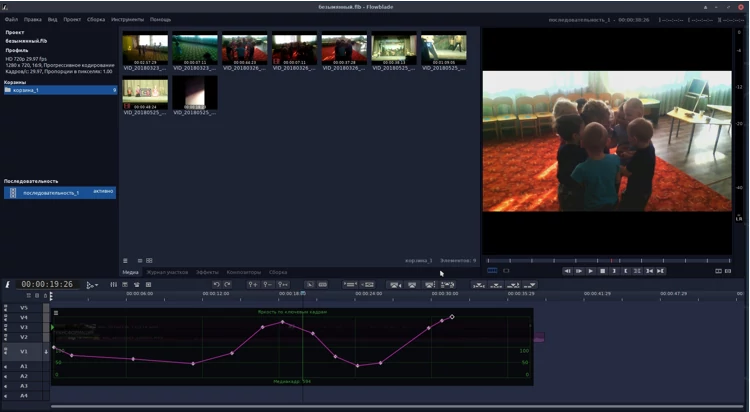Flowblade — многодорожечный нелинейный видеоредактор, выпущенный под лицензией GPL3. Поможет, как новичку, так и опытному пользователю воплотить в жизнь свои творческие идеи, по созданию видеороликов. |
Поддерживает все кодеки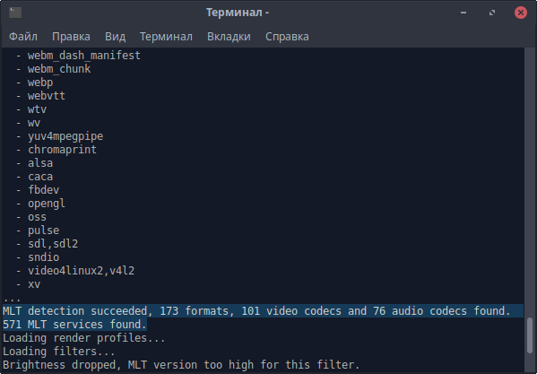Flowblade поддерживает все кодеки, которые в целом могут быть доступны в системе Linux, так как, он работает в качестве интерфейса для библиотеки FFMPEG. При запуске в терминале, мы видим сообщение о том, что для работы, нам доступны: 173 форматов, 101 видеокодеков и 76 звуковых кодеков. |
Настраиваемый «Режим работы»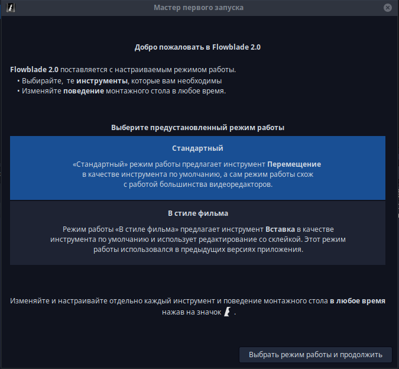Можно выбрать предустановленный «Режим работы» (набор инструментов, его порядок, инструмент по умолчанию и определённое поведение монтажного стола), или настроить его самому. |
Композиторы и эффекты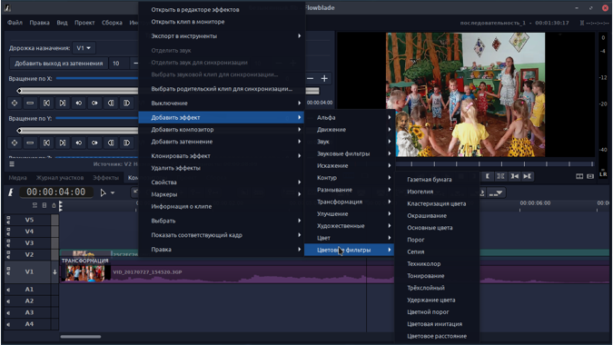Объединяйте и смешивайте видео, изображения и звук с помощью мощных инструментов. Тонируйте видеоролики в соответствии с вашим видением и изменяйте звук, для получения того настроения, которое вы хотите передать. |
Инструмент Эффекты G'MIC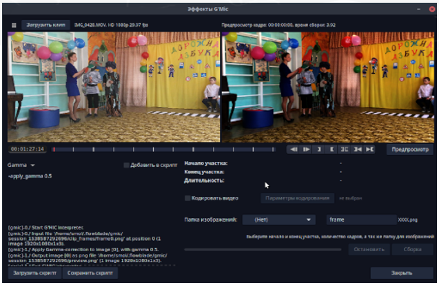G'MIC — это мощная технология фильтрации изображений с открытым исходным кодом, которую Flowblade предоставляет в виде отдельного инструмента. Смотрите демонстрационный ролик. |
Синхронизация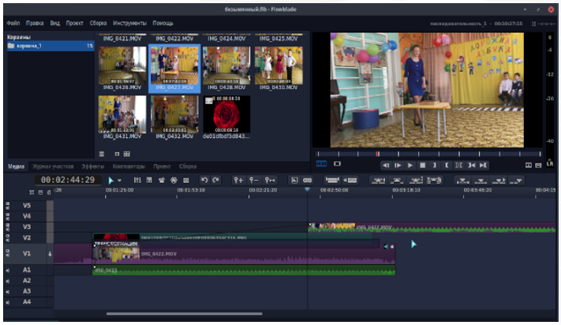Синхронизируйте ваши видеоклипы со звуковыми клипами или с клипами на других дорожках. Если синхронизация нарушена, можно легко синхронизировать их повторно. |
Режим прокси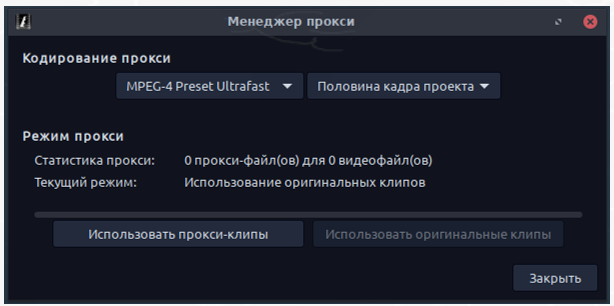Если у вас слабый компьютер, слишком медленный внешний накопитель или видеоролики хранятся на сетевом сервере, для комфортного редактирования, вы всегда можете выбрать Режим прокси. |
Видеообзоры
Цитаты пользователей
"Когда я наткнулся на Flowblade, он сразу мне понравился. Я редактирую в нём фильмы продолжительностью от 2 до 3 часов используя большое количество видеоклипов. Очень удобно, когда клипы автоматически склеиваются друг с другом, особенно во время удаления плохих участков и перемещения видео.", dnsXXXXX
"Мы - группа немецких студентов — в настоящее время снимаем фильм для школьного проекта, мы попробовали несколько свободных видеоредакторов и решили остановиться на Flowblade.", "...с этого момента всё стало получаться хорошо — наконец сбои исщезли! Многое эффектов, про которые я думал, что придётся забыть, теперь снова мне доступны. Спасибо за ваш проект — Flowblade rocks!", R.W, Germany
"Я профессиональный оператор монтажа и режиссер, со стажем работы более 15 лет здесь, в Италии... Flowblade уже показывает, что в нём заложен большой потенциал, так как видно, что разрабатывают его люди имеющие представление, каким должен быть видеоредактор, для реального его использования.", M.S, Italy